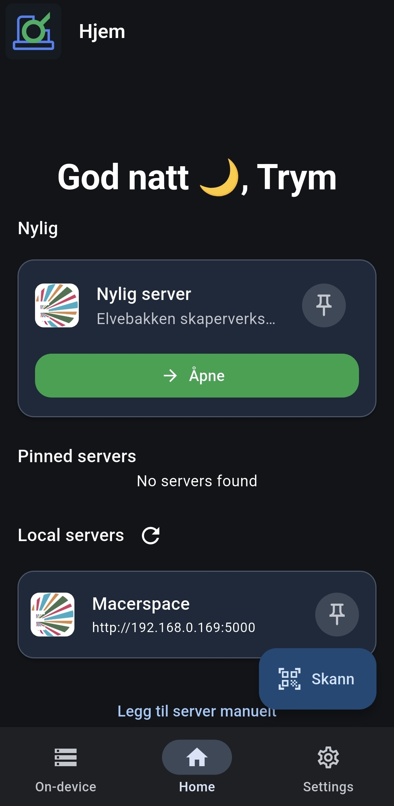
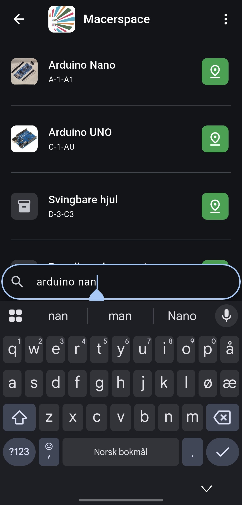
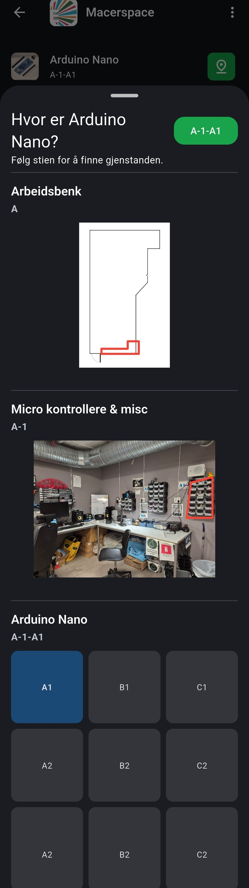
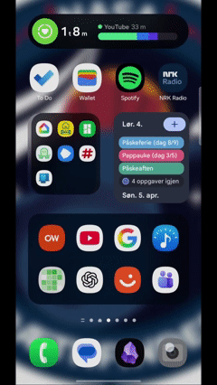
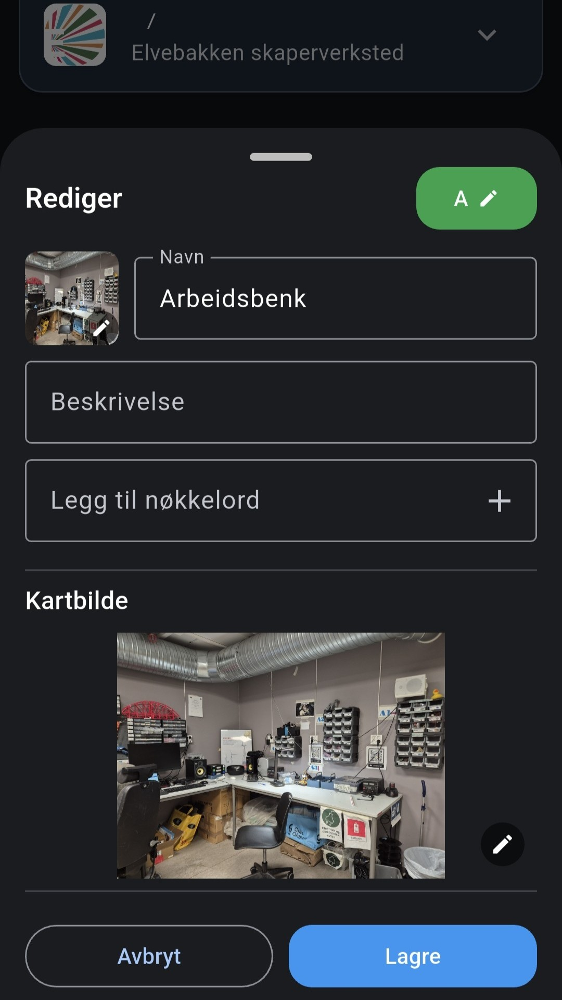
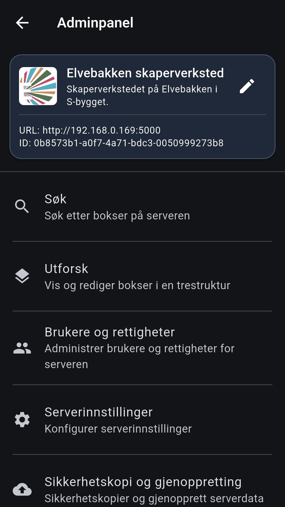

STEG 1
Koble til

Enkelt inventar søk for enhver skaper ✨
Skapersøk
STEG 1

STEG 2

STEG 3

Skapersøk er bygget for deg, enten du driver skaperverksted, bedrift, hobbyrom eller bare er
privatperson.
Uansett hva, Skapersøk gjør inventar enkelt: slutt på leting, slutt på sløsing,
slutt på forvirring.
Skapersøk er gratis for privat bruk og hobbyprosjekter🎉.
Er du en bedrift eller organisasjon tilbyr vi organisasjonslisens.
👉👉Kontakt på trym@bringsrud.com👈👈
LISENSER
Velg den varianten som passer bruken din best.
Gratis
Organisasjonslisens
Fra 2 900 kr/år
FUNKSJONER
Brukere trenger kun å skanne en QR-kode for å komme i gang.
Ingen installasjoner, ingen registrering, ingen bogus.

Rediger inventaret ditt enkelt direkte i mobil- eller webappen. Ingen uforståelige menyer eller endeløse regneark.

Som administrator får du alle verktøyene du trenger for å administrere brukere, sikkerhetsinnstillinger og systemkonfigurasjon.

Skapersøk serveren kan enten kjøre: